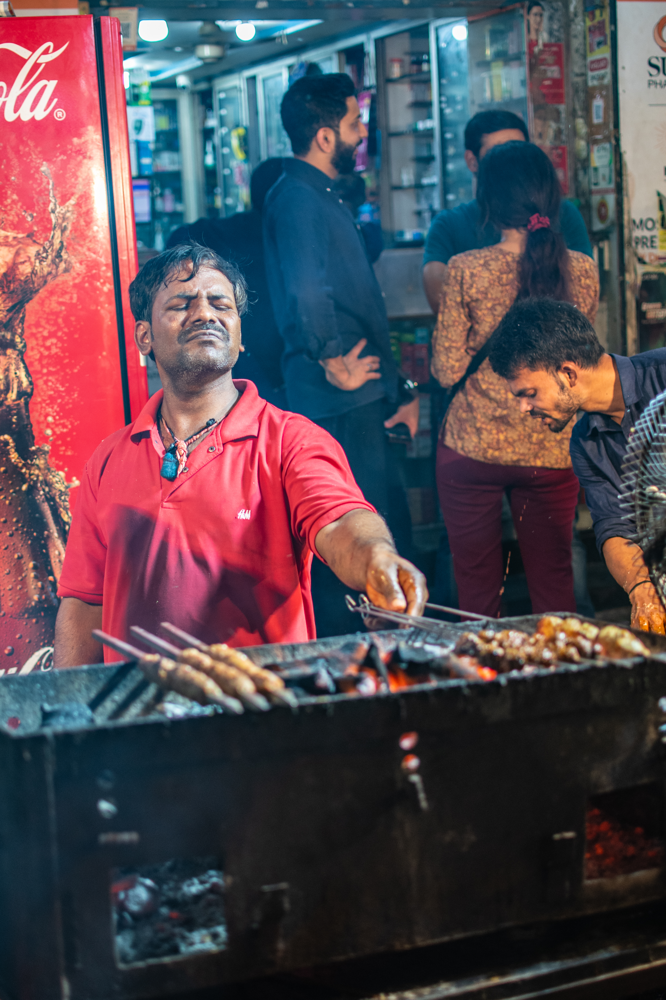
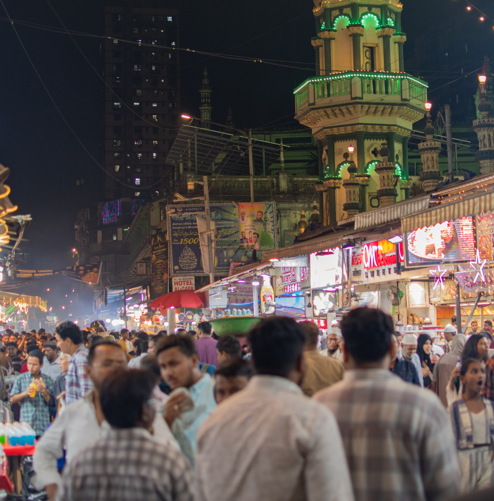
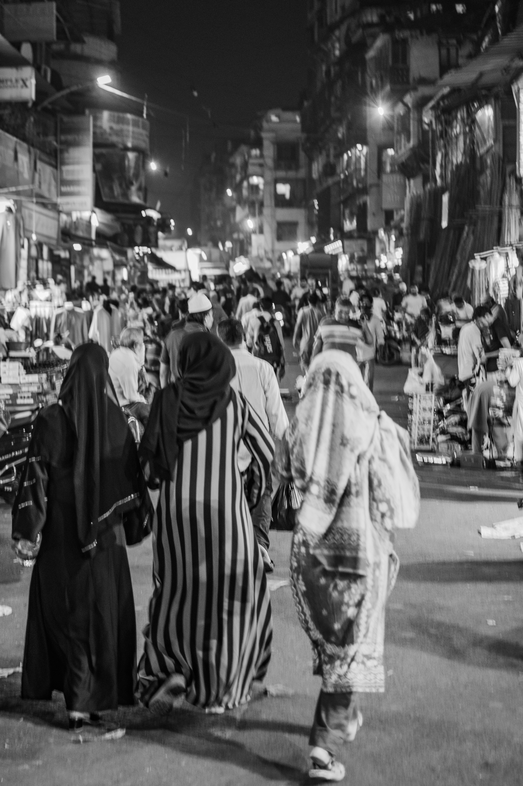
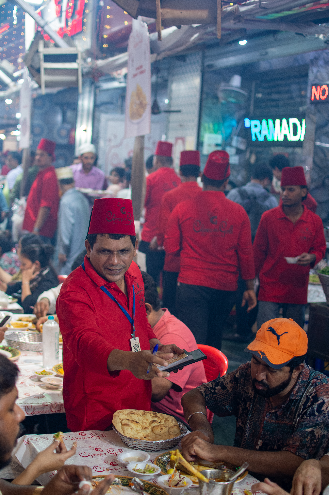
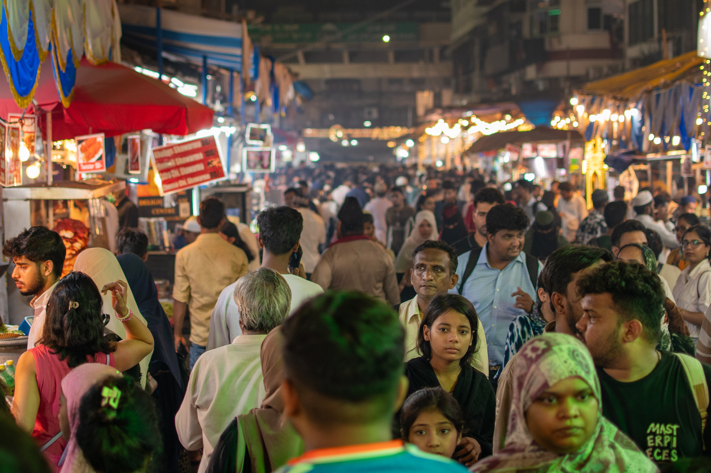

A photographic series — Mumbai, 2026
Mohammed Ali Road · Ramadan · Mumbai
Five photographs from a single evening on Mohammed Ali Road — tracing the rhythm of iftar from preparation to release.

01Preparation
Before the breaking of the fast, a vendor at the grill with his eyes closed, arm reaching over the fire. I don't know what he was thinking about in that moment. But something in it reads as ritual rather than labor, and that felt like the right place to begin.

02Gathering
The illuminated tower of the mosque rising above the crowded street, the smoke, the signs, the mass of people already moving through it. This is the context. It's not a quiet or reverent scene in any conventional sense. It's loud and dense and completely alive, which is kind of the point.

03Arrival
Three figures walking away from the camera into the crowd, the street opening up ahead into lights and motion. I wanted something that felt like arrival without being about faces or spectacle. Following someone into a place rather than watching from outside.

04The Feast
A table, a shared meal, the red-uniformed waiters moving between diners with that particular organized chaos you find in a place that's been doing this for a long time. The RAMADAN sign glowing in the background wasn't planned. It just happened to be there, and it anchors the whole thing.

05Release
Hundreds of people eating, moving, talking — the entire length of Mohammed Ali Road lit up and in motion. It's not a quiet ending. That's intentional.
The Hour of Breaking
Mohammed Ali Road during Ramadan is one of those places you seek out because someone you trust told you it was worth it. I first saw it on Anthony Bourdain's No Reservations and made a point of being there after sunset one evening during the holy month. Nothing quite prepared me for what it actually felt like to be standing in the middle of it.
What struck me most wasn't the food or the scale or the noise, though all of those were extraordinary. It was the people. This wasn't a Muslim celebration that outsiders were tolerated at — it was something genuinely open. Muslim, Hindu, Christian, wealthy, poor — everyone was there, everyone was welcome, everyone was eating together. There's a warmth to that kind of shared humanity that's hard to describe without sounding sentimental, but it was real, and it's in the photographs if you look for it. I think about that sometimes when I see people in my own community treated as unwelcome for simply wishing others well.
It was also the first time on any of my trips to India that I ventured out completely on my own — navigating the Uber, the drop-off, finding the street, and eventually getting myself back. That probably sounds unremarkable to seasoned travelers, but India has a way of making you feel like you need a guide for everything, at least at first. Mohammed Ali Road that evening was my reward for finally trusting myself to just go.
The sequence opens before the breaking of the fast — a vendor at the grill, eyes closed, arm reaching over the fire with what looks like complete absorption. I don't know what he was thinking about in that moment. But there's something in it that reads as ritual rather than labor, and that felt like the right place to begin.
The second image pulls back to show where we are. The illuminated tower of the mosque rising above the crowded street, the smoke, the signs, the mass of people already moving through it — this is the context. It's not a quiet or reverent scene in any conventional sense. It's loud and dense and completely alive, which is kind of the point.
The third image is the one I converted to black and white — three figures walking away from the camera into the crowd, the street opening up ahead of them into lights and motion. I wanted something that felt like arrival without being about faces or spectacle. Following someone into a place rather than watching from outside.
From there the sequence moves inside — to a table, a shared meal, the red-uniformed waiters moving between diners with that particular organized chaos you find in a place that's been doing this for a long time. The RAMADAN sign glowing in the background wasn't planned. It just happened to be there, and it anchors the whole thing.
The last image is the street at full release — hundreds of people eating, moving, talking, the entire length of Mohammed Ali Road lit up and in motion. It's not a quiet ending. That's intentional.
The sequence moves from preparation to gathering to arrival to feast to release. I used black and white for the arrival image to create a pause — a breath between the buildup and the meal. Color carries everything else because this is a place that lives in color.
The preparation image uses a wider aperture to isolate the vendor against the grill and throw the background soft. The gathering and release images use deeper depth of field to keep the full street and crowd readable. The feast image sits somewhere in between — the waiter sharp, the scene behind him present but not competing.
The night conditions required balancing exposure against motion. The arrival image captures a slight sense of movement in the crowd behind the three figures, which felt appropriate for that transitional moment. The vendor at the grill is frozen — which reinforces the stillness of that opening image despite everything happening around him.
Color was the right choice for almost everything here because Mohammed Ali Road at night is fundamentally about color — the red uniforms, the green mosque lights, the warm glow of the street food. The single black and white image works because of its contrast with everything around it, not in spite of it.